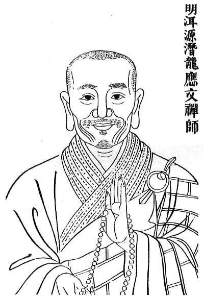
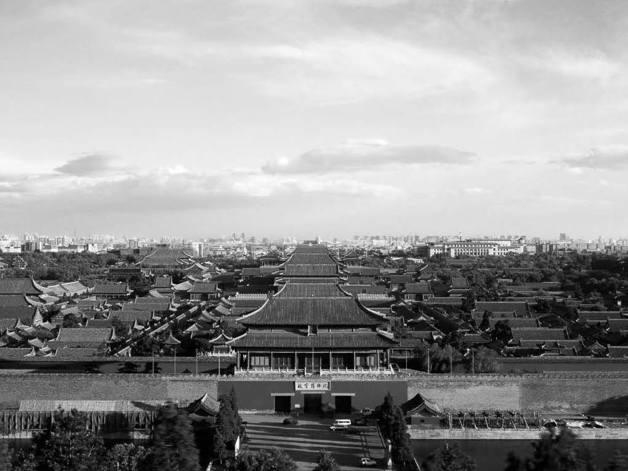

虽然事实证明，朱棣才是朱元璋构建的体制的合格继承人，但有讽刺意味的是，他却要以不合法方式来得到似乎天然属于他——抑或他才真正与之相配——的权力。同时，他的权力越是来得不合法，他就越发想尽一切办法来巩固和强化这权力，结果，他的这种努力与那种权力的本质，二者反倒相得益彰，彼此生发，将各自真谛发挥得淋漓尽致。
朱棣以武力推翻建文帝，虽非不费吹灰之力，但着实颇为顺利，一如两个不同重量级的拳手之间的较量，没有悬念。
他称帝的真正障碍，不是朱允炆，而是“合法性”。当把守金川门的谷王朱橞和李景隆为他打开城门之时，战争结束了，然而朱棣却意识到，现在他才面临真正严峻的考验。作为胜利者，他享受到的不是欢迎、拥戴和臣服。他赢得了战争，却没有赢得承认。史料为我们揭示出朱棣进入南京城时所遭遇的尴尬局面：迎降的朝臣不过百十号人，而“遁去者，达四百六十三人”[33]，这还不包括自尽者、被捕者。假如换置为现代民调的表述方式，朱棣的支持率不足百分之二十。
为什么？
朱允炆良好的声誉是一个原因。万历年间，李贽于《续藏书》借评述方孝孺其人之机，极大胆地在同洪武严政相对照的意义上，称赞建文的四年之治：“盖（洪武年间）霜雪之用多，而摧残之意亦甚不少。建文继之，专一煦以阳春。”比朱元璋为严冬，而把朱允炆比做阳春，乃至说他善始善终地（“专一”）只把温暖带给民间。这个说法应不过分。由建文入永乐的时人朱鹭，在诗《过金陵吊方正学诸臣》里写：“四年宽政解严霜，天命虽新故忍忘？”严霜，指朱元璋；天命虽新，指朱棣上台。诗句中对朱允炆怀念之意甚浓。从朱鹭到李贽，一百多年过去了，朱允炆的良好声誉却是一贯的，没有什么不一致的材料来推翻这印象。

传说建文帝逃走后出家为僧。
但也只是传说。其他传说包括逃往南洋。总之， 侄儿的真实下落令朱棣很是烦恼。

北京紫禁城。
由朱棣仿南京紫禁城在北京修建，完全是新建，并非在金、元旧宫基础上扩建翻新。明初，大约三四十年时间内，中国居然造了两座这样伟大的宫城；当然，每个铜板都来自黎民百姓。
不过，这是较次要的原因。虽然古代因为“人治”的习见，对贤君心向往之，但朱棣取朱允炆代之的问题，并不简单地是只与他们叔侄个人品质有关。
士大夫，或者说儒家官僚，有自己的政治理性。它反映在若干原则上，例如君臣之义、宗法关系、王朝继嗣制度等。这些原则，基于儒家对心目中政治秩序的诉求，关乎它所理解的国家根本和大体，是不可破坏的，具有超乎道德之上的地位，也是优先于道德标准的最高标准。
孔子在世时，即有意识地致力于建立这秩序，他在七十岁左右的高龄，完成毕生最后一部著作《春秋》。“《春秋》之义行，则天下乱臣贼子惧焉。”[34]此书之作，即为正名分、立褒贬，司马迁评曰“以绳当世”[35]，近人则称“儒家政治思想，以《春秋》为最高标准”[36]。孔子自己有一句话：“后世知丘者以《春秋》，而罪丘者亦以《春秋》。”对此，经学家刘煕解释是：“知者，行尧舜之道者也。罪者，在王公之位，见贬绝者。”意即《春秋》树立了一个标杆，明确应该怎么做和不可以做什么。究竟是什么样的标杆呢？说到底，就是制度，是任何情形下不能被侵犯和破坏的国家政治秩序，当时用词是“礼法”。“礼法”包含道德，但比道德更高。比如暴君被杀，依《春秋》的书法，只能用“弑”字，不能称“杀”。《春秋》襄公三十一年记：“莒人弑其君密州”。这件事，实际上是莒国国君为其人民所共弃，对这正义之举，《春秋》仍坚持书“弑”，因“弑”字有以下犯上的意思，这层意思在孔子看来必须申明，哪怕莒君已到“国人皆曰可杀”的地步，但身份仍是国君，虽因恶被杀，国人所为仍为非礼，故必须明书曰“弑”。这便是“《春秋》笔法”，借历史的书写，表达和构建一套任何情形下不动摇的政治伦理。所以，吴、楚两国国君已经称王，《春秋》仍尊周天子所予封号，只对他们以“子”相称。前631年，晋文公以霸主身份将周襄王召至河阳、践土（今晋豫一带）接受诸侯朝拜，这是严重违反礼法的举动，《春秋》于是记为“天王狩于河阳”，因为“‘以臣召君，不可以训’，故书曰‘狩’。”[37]鲁惠公死后，嫡子（后来的鲁桓公）年幼，因此由继室庶出之子暂摄君位，是为鲁隐公；《春秋》对此事隐而不提，只用“元年，春”一语，一方面表示发生了执政者的交替，一方面回避直接谈论有新君即位——虽然确实发生了这种事情。总之，用非常严格、不苟的表述，来坚持伦理正确。
这政治伦理，经一千多年来从汉儒到宋儒的深入阐释，在士大夫心目中已根深蒂固、不容移易，构成他们对于政治合法性的基本理念。
明代最典型的事件，是嘉靖初年那场极激烈的“大礼议”。当时正德皇帝朱厚照死去，无子，由兴献王世子朱厚熜入继，成为嘉靖皇帝。他在当皇帝的第五天就下令讨论生父兴献王的尊号问题，亦即想给父亲追加皇帝名义，一下子引起非常复杂的伦理问题。根据礼法，作为入继者，朱厚熜继承皇位的同时，便自动以孝宗朱祐樘为父（朱厚熜与朱厚照同辈），现在提出给本生父上皇帝尊号，实际上就成为“继统不继嗣”。以我们今人眼光，可能觉得这种问题无关痛痒，而在当时，却事关皇帝权力由来是否合法的大节。于是首辅杨廷和带头，满朝士大夫奋起抗争，双方僵持三年之久，最后演变成“左顺门事件”。嘉靖三年七月十五日，自尚书、侍郎至员外郎、主事、司务等二百二十位官员，以相当于现代静坐示威的方式，跪伏左顺门外，务求皇帝纳谏，几次传旨令退去，皆不听，仍跪伏喧呼。嘉靖帝大怒，出手镇压，除当即逮捕一百四十二人外，命四品以上八十六人待罪听候处理；七月十七日，命所有参与此事的四品以上官员夺去俸禄，五品以下俱处以廷杖，受廷杖者人数达一百八十余人，其中，死于杖下竟达十七人。
由“大礼议”可见，明代一般儒家官僚心中，对于“合法性”，怎样持着绝不圆融的态度。朱厚熜是名正言顺做皇帝的，他无非想捎带着把亲生父亲也引入皇帝行列，尚且招致士大夫阶层一致抵制。那么，身为颠覆者，凭仗武力推翻合法君主、夺取帝位的朱棣，将面临怎样困难，更可想而知。
南京被燕兵控制以后，少数士大夫曾在各地武装抵抗，很快都被扑灭。多数人选择弃官和逃亡，以此拒绝与篡权者合作，如果跟崇祯皇帝自尽后对满清比较激烈的抵抗相比，似乎显得平淡。不过其中情形并不相同，明末抵抗是基于亡国之痛，而朱棣篡政说到底是朱姓王朝的“家事”，不合法归不合法，江山终究没有易手。对此，孔子早就说过：“邦有道，则仕；邦无道，则可卷而怀之。”[38]“天下有道则见，无道则隐。”[39]“邦无道，富且贵焉，耻也。”[40]眼下的情况，就很符合“无道”的定义。所以，跑掉，不合作，躲起来不做官，足以表明对时事的态度。
此种局面，朱棣事先也应有所预料，但恐怕未曾料到抵制的人如此多。除了皇室亲贵——朱允炆削藩，早就得罪了这批人——迎降队伍中头面人物寥寥无几，部长级（尚书衔）只有一个茹瑺，副部级（侍郎）四位。反观朱棣先后两次开列的“奸臣榜”（支持朱允炆的官员），吏、户、兵、刑、工、礼部尚书和太常卿、大理卿俱在其内，加上一堆侍郎，外带皇帝首席顾问、知识分子领袖方孝孺，人心向背，一望而知。他更没想到，大局已定之后，这些人绝大多数还坚持死硬立场，甚至当他做足姿态、给足面子，他们仍不买账。这时，他开始明白，撵走朱允炆、自己黄袍加身是一码事，找到“合法性”完全是另一码事。
有迹象表明，最初，朱棣是渴望“合法性”的。他希望事情尽快步入正轨，摆脱篡位者的阴影。
那个替他策划了整个叛乱夺权计划的智囊人物道衍和尚（姚广孝）早就深谋远虑地忠告：进入南京后，当务之急是搞定方孝孺。道理不言自喻：如方孝孺可为所用，以他在士林中的声望，令儒家官僚集团接受既成事实，难度可降低不少。朱棣亦深知其意义，捉住方孝孺后，依姚广孝之言，亟假辞色，结果大失所望，进而恼羞成怒。《明史》对这一段的描写，细腻可观，如小说一般：
先是，成祖发北平，姚广孝以孝孺为托，曰：“城下之日，彼必不降，幸勿杀之。杀孝孺，天下读书种子绝矣。”成祖颔之。
至是欲使（方孝孺）草诏。召至，悲恸声彻殿陛。
成祖降榻，劳曰：“先生毋自苦，予欲法周公辅成王耳。”
孝孺曰：“‘成王’安在？”
成祖曰：“彼自焚死。”
孝孺曰：“何不立‘成王’之子？”
成祖曰：“国赖长君（指建文之子年幼不足立）。”
孝孺曰：“何不立‘成王’之弟？”
成祖曰：“此朕家事。”顾左右授笔札，曰：“诏天下，非先生草不可。”
孝孺投笔于地，且哭且骂曰：“死即死耳，诏不可草。”
成祖怒，命磔诸市。[41]
朱棣摆出礼贤下士姿态，“降榻”亲迎，口称“先生”，很像一位贤君。但方孝孺不吃这套，一意剥掉他的伪装。朱棣因对方是大儒，投其所好，顺带也自我表现一下，说起了“周公辅成王”的故事。但他实不该说这个；一说，让方孝孺逮个正着。方抓住此话，就合法性问题向朱棣连连进攻，招招不离后脑勺，朱棣初还勉强抵挡，随即左支右绌，终于辞穷，扔出一句“此朕家事”，放弃讲理。
这场抢白，方孝孺不但明白地告诉朱棣：“你的所作所为，全都非法。”而且连提三问，每一问，都把朱棣逼到死角，让那伪君子的面目大白于众。本来，朱棣希望“转化”方孝孺这么一个士林领袖，以渡过“合法性危机”。他让方孝孺“草诏”，方若接受，等于承认他皇帝身份合法，这或比所草之诏意义更大。然而，方孝孺不但拒绝，反就合法性问题穷追不舍。
方孝孺的态度，让朱棣山穷水尽。他已然认清，自己的行为不可能指望正统儒家官僚阶层接受与认可。于是，一方面，难免恼怒至极而丧心病狂，另一方面，他确也只剩下一种选择：运用暴力，去强化到手的权柄。
“磔”，是一种将犯人割肉离骨、断肢体，再割断咽喉的极刑。朱棣这样处死一个读书人，除了发泄极度仇恨外，还包含冷血的意思，即通过恫吓，令正统儒士胆寒。
这层目的，更由他的进一步措施得到验证——
方孝孺自己被杀（时年四十六）不算，朱棣复诏“诛其九族”，说是“五服之亲，尽皆灭戮”。[42]将方孝孺血缘相近的亲族全部杀光，朱棣犹“怒不已”，闻所未闻地“必欲诛十族”。
所谓“九族”，典出《尚书•尧典》“以亲九族”。历来经学家有不同解释，一派认为是父族四、母族三、妻族二；一派认为是从自己算起，上至高祖，下至玄孙。明清刑律服制图则规定，直系亲属上推至四世高祖、下推至四世玄孙，另外再在旁系亲属中横推至三从兄弟的范围。不管怎样界定，九族尽诛，一个人既有亲属基本一网打尽，杀无可杀。饶是这样，朱棣意犹未平，怎么办？他就破天荒地“将其朋友代为一族诛之”[43]，这样凑成“十族”。
方孝孺一案总共杀掉多少人？黄佐《革除遗事》记作八百四十七人。李贽《续藏书》记作八百七十三人，略有差别，或因万历年间（李贽生活于此时）研究者对罹难者又有新发现，而使总数增加二十九人。除直接死难者，受牵连而发配、充军的，又有千余人。一百多年后，万历十三年三月，当方孝孺案彻底赦免时，所统计的各地流放者，人数为一千三百余人。[44]
方孝孺以一人之“罪”，致上千人陪死、落难，说明了三点：第一，与乃父一样，朱棣也流淌着嗜杀之血。第二，如此滥杀，远远出了报复之需要，它主要的目的，是对暴力、权威的炫耀；朱棣既不能以“德”拢人，索性露出血腥面目——他一直有这两副面孔，前者其表，后者其里。
整个永乐元年，都是在血腥中度过。方孝孺案仅为大屠杀的开端。除方孝孺外，被灭族灭门的，还有太常寺卿黄子澄、兵部尚书齐泰、大理寺卿胡闰、御史大夫景清、太常寺少卿卢原质、礼部右侍中黄观、监察御史高翔等多人。每案均杀数百人。如黄子澄案，据在《明史》中主撰“成祖本纪”的朱彝尊说，“坐累死者，族子六十五人，外戚三百八十人。”[45]胡闰案，据《鄱阳郡志》所载，“其族弃市者二百十七人”，而累计连坐而死的人数，惊人地达到“数千人”。《明史》亦说：“胡闰之狱，所籍者数百家，号冤声彻天。”[46]遭灭门之祸的总数，已难确知，但仅永乐初年著名大酷吏陈瑛，经其一人之手，就“灭建文朝忠臣数十族”[47]。
这种暴力，甚至于可以毫无尺度。方孝孺被诛“十族”，虽已闻所未闻，但遭牵连者，究与方家有这样那样沾亲带故名义。后来，发展到纯粹伤及无辜的地步。景清一案，“磔死，族之。籍其乡，转相攀染，谓之‘瓜蔓抄’，村里为墟。”[48]就是说，景清乡邻全部遭殃，“转相攀染”四字，黑暗之至，“村里为墟”说明该村最后弄成为“无人村”。另一个被族灭者高翔，除了满门杀光，还被挖了祖坟。这且不说，朱棣先把高家产业分给他人，再宣布，凡分得高氏产业者，全部课以重税。为什么？“曰：‘令世世骂翔也。’”[49]
灭族者之外，还有许多人，处决其本人后，家属或被宣布为奴，或辱其妻女，使嫁最贱之人。直到二十二年后，这批人才被特赦为“民”，“还其田土”[50]。
中国历史上向来不乏杀虐，但以往多为战争、族群冲突、暴乱、饥荒所致。纯粹的政治迫害，像朱棣报复建文忠臣如此大规模的事件，杀戮之狠、株连之广，历史上还是第一次。朱元璋一生也搞过几次大的政治迫害，但分散于三十年统治的不同时期。单论一次性的集中迫害，永乐元年恐怕创了历史之最。
但其中情形又颇怪异。朱棣的血腥杀戮，本意是树立威权、降服人心，可是杀人越多，也益发凸显了他权力基础的薄弱；每杀一个人，都等于向世人宣告：“又出现了一个反对者——虽然被我干掉了。”另一面，不断有人慷慨赴死，恰恰不断在证明被推翻的建文政权更合人心，或在人们心目中是更具法律或道德合法性的政权。在朱棣的酷刑面前宁死不屈、坚持立场的例子，比比皆是，大家翻翻《明史》，列传第二十九到第三十一，即卷141-143之间，记述了大大小小这样的故事一百来个，个个精彩，令人肃然。其中最奇的，有人原不在所谓“逆臣”之列，但为着正义，竟然送上门去——方孝孺处死弃市，开国名将廖永忠之孙廖镛、廖铭兄弟二人，明知危险，也不避斧钺，挺身而出，将支离破碎的遗骨收捡起来，葬于聚宝门外山上；事后，镛、铭果然被捕处死，他们另一个兄弟廖钺及从叔父廖昇也同时受牵连而充军戍边。
许多年后，李贽在总结这段历史时说了一番话：“故建文之时，死难之臣，若此其盛者，以有孝孺风之，连茹拔之，而建文复以春温煦之耳。”[51]意思是，之所以当时那么多士大夫在淫威前宁死不屈，是因为一有方孝孺做榜样，二来整个儒士阶层为操守而同声相应、同气相求，还有建文四载清明政治所给予大家的感动。现实如此，朱棣怎么办？也应该设身处地替他想想：当时若不大开杀戒，势难压平局面。然而，屠刀高举的结果，却又更彰明地暴露了他失道寡助的处境。左也不好，右也不是，“猪八戒照镜子——里外不是人”。
自打朱棣将朝思暮想的平天冠[52]戴到自家脑袋上，“合法性”问题，也就像驱不散的梦魇，始终追随着他。
这是他非正义攫取政权所须付出的代价。只可叹，历史、社会和人性，也不得不为这位自命为永乐皇帝的人的贪婪和权力欲而付出沉重的代价。什么代价？只消看看朱棣在此后一生当中，怎样竭尽所能，为维持其从来源处即沾染了洗不掉的巨大污点的统治，做下哪些事，便一目了然。